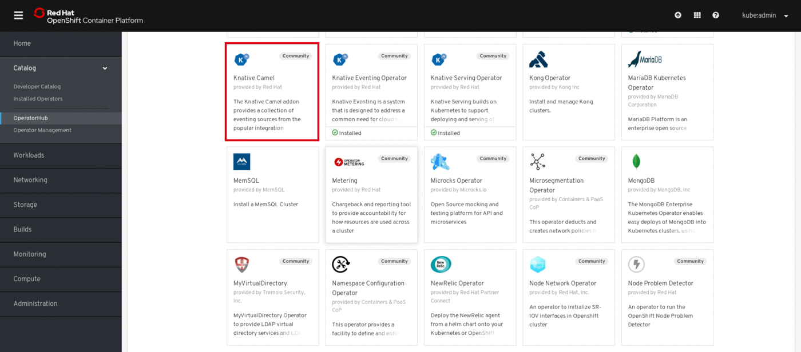
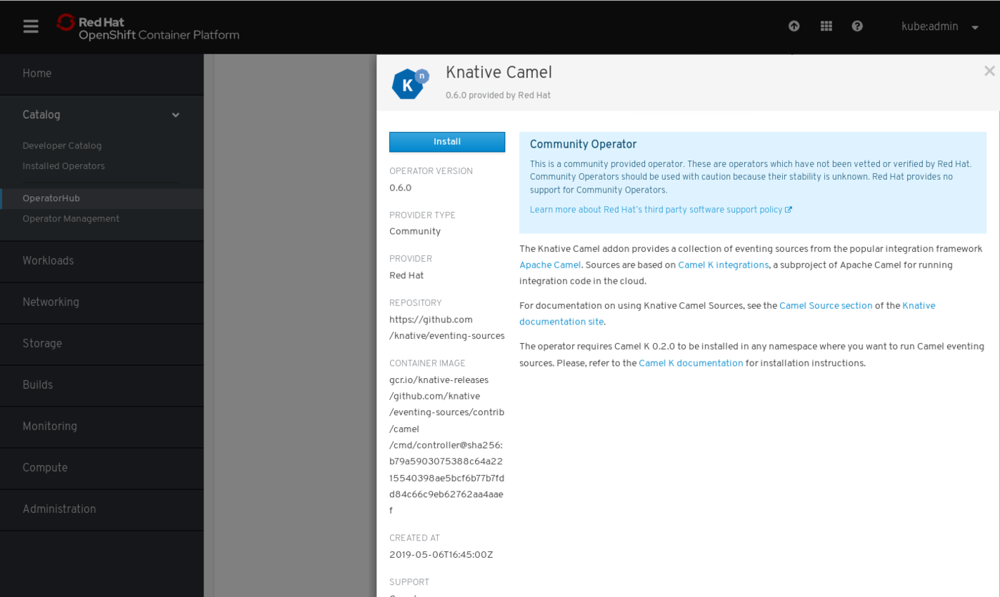

Knative Camel Operator
version: 0.7.1
Serverless integration is possible with Knative and Apache Camel on OpenShift. This guide walks cluster administrators through installing the Knative Camel Operator in an OpenShift Container Platform cluster. As a cluster administrator, you can install the Knative Camel add-on from the OperatorHub using the OpenShift Container Platform web console.
The Knative Camel add-on allows you to to install Camel Sources from the Developer Catalog.
Installing the Knative Camel Operator
-
Go to Catalog > OperatorHub. A list of operators for OpenShift, provided by Red Hat as well as a community of partners and open-source projects is available. Use the Filter by Keyword box to facilitate the search of the Knative Camel Operator in the catalog.
-
Click on the Knative Camel tile.
 -
Click Continue in the
Show Community Operatordialog box to proceed. -
The Knative Camel Operator descriptor screen will appear. Click Install.
 -
On the Create the Operator Subscription screen
-
Go to the Installation Mode section and choose the default selection.
-
Click Subscribe.

-
-
Confirm the subscription for the installation operator, by viewing the Subscription Overview. Observe as the UPGRADE STATUS goes for
0 Installingto1 Installed.
-
Confirm the operators are installed by navigating to Catalog > Operator Management viewing the Operator Subscriptions tab.

Uninstalling the Knative Camel Operator
-
Go to Catalog > OperatorHub
-
Click on the Knative Camel Operator tile.
The operator tile will indicate it is installed. -
Click Uninstall on the Knative Camel Operator descriptor screen.
-
In the Remove Operator Subscription dialog box
-
Select Also completely remove the Operator from the selected namespace
-
Click Remove. The Knative Camel Operator subscription is now removed.
-